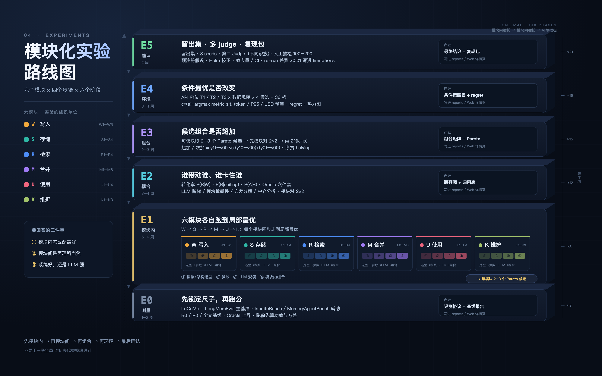
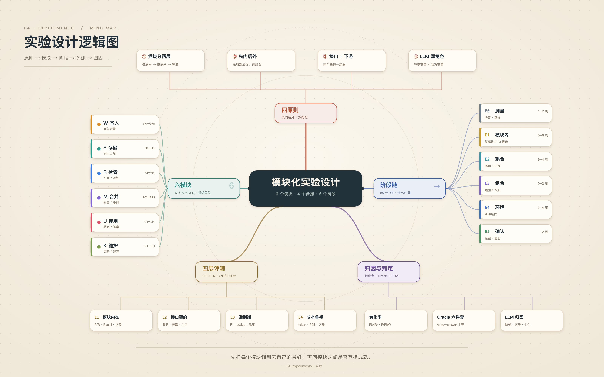
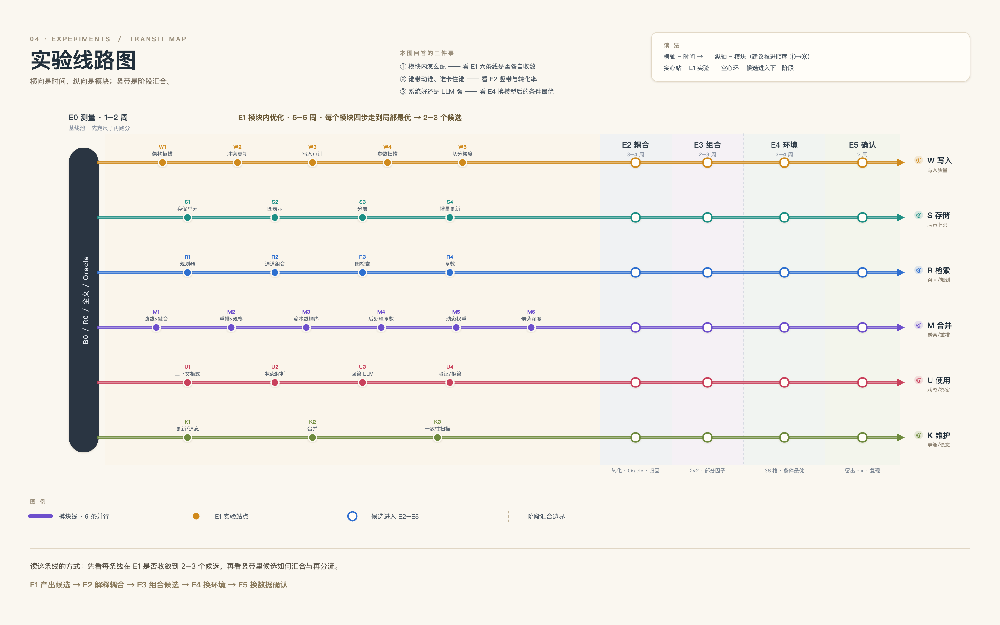
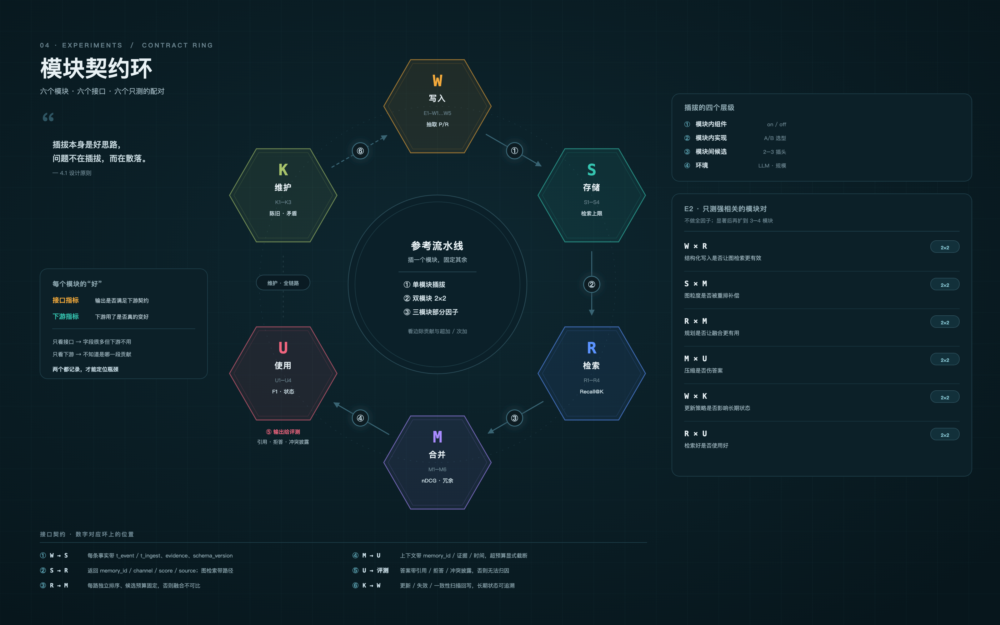
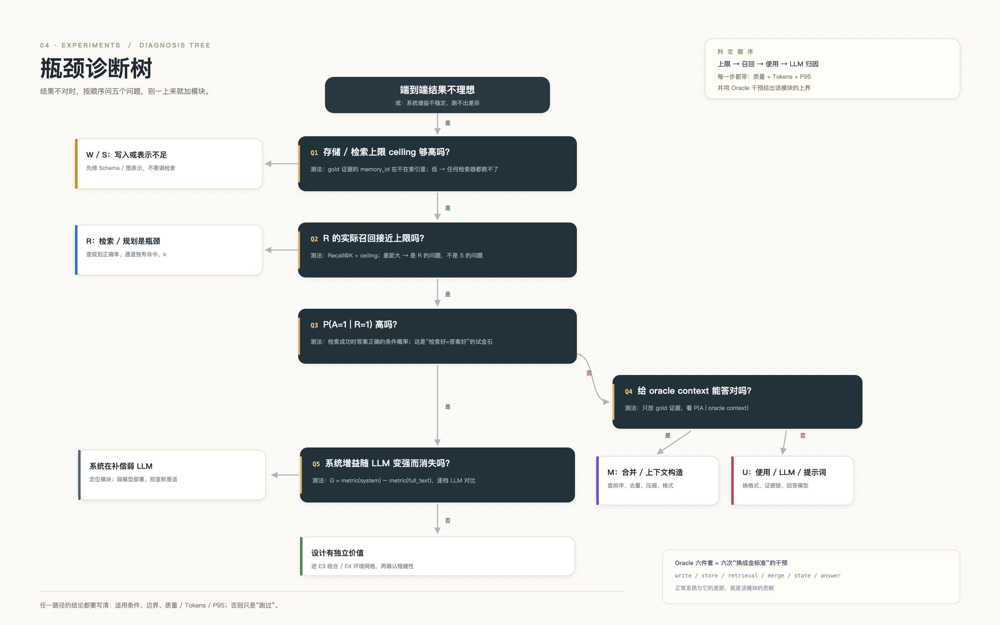

把 E0→E5 做成自下而上堆叠的六层“地层”，E1 层横向展开六个模块卡。一眼看出“先模块内、再模块间、最后确认”的推进顺序。

以“模块化实验设计”为中心，向五个方向长出原则、模块、阶段、评测、归因。适合讲“为什么这样组织”，而不是“第几周做什么”。

六条模块线并行，五个阶段竖带汇合；实心站是 E1 实验，空心环是进入下一阶段的候选。时间、并行、换乘一卡通。

六个模块沿环流动，六个编号对应六条接口契约；右侧列出 E2 只做的六组 2×2。适合回答“模块之间靠什么接上、谁配谁”。

结果不理想时，按上限 → 召回 → P(A|R) → oracle context → LLM 归因的顺序问五个问题，每条“否”都落到该修的模块。
主图用 01 立体分层总览，一页交代“六模块 × 四步 × 六阶段”；汇报进度配 03 线路图；讲模块接口用 04 契约环；结果复盘用 05 诊断树。02 思维导图 留作讨论稿——它最能解释“为什么不是全局 2^k”。